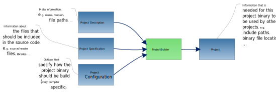

C/C++ Projects in Rokuby
In the first place Rokuby was build to create C++ projects under various operating systems. As ruby and rake were already in place it was a logical choice to extend them to cope with more complexity in terms of C++ build management.
Therefore, rokuby has some integrated processors that allow the user to more easily build even complex C/C++ projects.
Currently there are the following integrated build process chains for C/C++ projects:
Here we will explain some general rules which both build tools follow. They were intentionally designed to use the same core units to reduce the work when defining a project. In the following we will explain information units that are used in all build tools to define a C/C++ project.
Below you see an example for a general project build process:

You can see that there are several types of information units that are input into a project builder processor. We will explain all of the in the following.
Project Description
The project description is the core information concerning each project. It includes:
- The name of the project
- The current version of the project
- A basis for the name of the binary that will be created (it is extended depending on the configuration)
- The type of the binary that should be build (executable, static/dynamic link library)
Source Unit Specification
Source units are units of code that are needed to successfully compile the project. The specifications for these units include the following:
- A file specification for the source files that are part of the project itself.
- A file specification for the header files that are part of the project itself.
SourceUnitSpecification Source
Platform Configuration
Platform configurations in the context of Rokuby mean different system setups for which the build process differs.
These platform configurations contain:
- Operating System.
- Architecture.
- A type (which is more or less just a freely chosen symbol that states a certain configuration).
There are several reasons why a differentiation between different platform setups is practical. One of them is explained in the section about libraries below.
Libraries
The inclusion of libraries into software project is probably one of the most complex problems when building them. Therefore, this process is rather complex compared to the other parts of the build tool.
One of the problems that you encounter when including libraries into your project is that of choosing the right library for the right platform that you build your project for. Normally, you have different libraries for Linux and Windows, for each architecture the operating system runs on and even different configurations you want to run the library in (e.g. release or debug). To differentiate between these different instances of the library is one of the reasons why we introduced the platform configurations described above. Therefore, when specifying a library you have to give one or several platform configurations for which this library instance is meant.
When looking at libraries that are use in C/C++ projects you can end up with the following conclusions:
- Each library has at least one binary file which contains the compiled and executable code.
- Additionally, each library is registered with the linker by telling him the location of a file that he should inspect. This file can be the same as the binary file, but it also can differ from this file (e.g. for DLL under Windows you normally have a lib and a dll file).
- Each library consists of at least one header file that must be included into a project so that it can compile the source code that depends on the library.
Putting everything above together leads us to the following attributes that we need to state for a full specification of a library:
- The name of the library (just needed to indetify library instances that represent the same library)
- The library file specification.
- The link file specification.
- The specification for the header files that are needed to be included in dependend projects.
- The platform configurations this library is meant for.
They are separated in the following way:
- All the file specifications are contained in a so called library location specification.
- The name, the library location specification, and the platforms are then gathered in a library specification.
Project Configuration
The project configuration is the place to gather information of how the builds for different environments or configurations of the project differ.
These project configurations can be very extensive for specialised tools. In the general case the project configuration only contains
- A platform configuration.
- Defines that will be applied to the project in case of this configuration (but defines can be added to most information units anyway).
Project Sepcification
The project specification is the place where the information about all required files is gathered. This means:
- The source unit specifications needed by the project.
- The library specifications neeeded by the project.
A general project example
This section presents a general example for a project build that is independent of the specific cases of project build with differnt tools (e.g. G++ or Visual Studio). It is not operational! Rather it is meant to illustrate the general process of setting up a build in Rokuby. Some points need to be added for each of the different build tools. But these steps are described in the sections of these tools.
# Define meta information for the project in its ProjectDescription
projDescr :DemoProject, {
name: "DemoProject",
version: "0.1",
binName: "demoproject",
binType: :Application,
projPath: projPath("."),
compPath: projPath("build"),
buildPath: projPath("bin"),
defs: ["A_WONDERFUL_DEMO_DEFINE"]
}
# Define the source code that should be included into the project by means of a SourceUnitSpecification
# This specification defines source in the subdirectory src below the project directory and header files
# in the subdirectory include of the project directory. The search will be recursive.
srcSpec :DemoProjectSource, {
srcSpec: fileSpec({
inPats: [".*\.cpp$", ".*\.c$"],
exPats: [],
sPaths: [projPath("src")]
}),
inclSpec: fileSpec({
inPats: [".*\.h$", ".*\.hpp$"],
sPaths: [projPath("include")]
})
}
# Define a library with different instances for different platforms
# Combine library specifications and source specifications into a project specification
projSpec :DemoProjectSpec, {
srcSpecs: [srcSpec(:DemoProjectSource)],
libSpecs: []
}
Multi Platform Project Building
After reading
I would recommend to read on with how to create multi-platform project build processes.